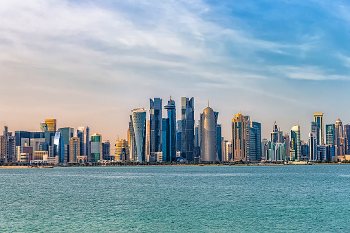

My Dream Travel Destinations
My favourite Countries are:
- Saudi Arabia
- Qatar
- Somalia
- Italy
- Kuwait
Saudi Arabia - Riyadh
As a Muslim, visiting Saudi Arabia feels like a profound pilgrimage beyond just the sacred sites. The opportunity to perform Hajj or Umrah in Mecca is a deeply spiritual experience, allowing me to connect with millions of fellow believers in devotion. Exploring the rich Islamic history in Medina, where the Prophet Muhammad lived and preached, adds another layer of significance to my journey. Additionally, the chance to immerse myself in the local culture, witness stunning landscapes, and experience warm hospitality makes Saudi Arabia a must-visit destination that deepens my faith and enriches my understanding of Islam.

Qatar
Visiting Qatar as a Muslim offers a unique blend of modernity and tradition that deeply resonates with my faith. The opportunity to explore beautiful mosques, like the iconic Imam Muhammad ibn Abd al-Wahhab Mosque, fills me with spiritual awe. Qatar's commitment to promoting Islamic culture and values, combined with its rich history and vibrant communities, allows me to connect with my roots in a contemporary setting. I also appreciate the warm hospitality and the chance to engage with fellow Muslims from around the world during events like the Doha International Book Fair and the Doha Festival, making my visit both enriching and inspiring.

Somalia
I had an incredible experience visiting Somalia, a place filled with rich culture and stunning natural beauty. The coastline along the Indian Ocean was breathtaking, with pristine beaches and vibrant marine life. I loved exploring the diverse landscapes, from deserts to lush highlands, and immersing myself in the local culture. The hospitality I encountered was heartwarming, and the delicious cuisine was a highlight of my trip. Visiting historical sites like the ancient city of Zeila and the lively markets of Mogadishu really opened my eyes to the country’s fascinating history.